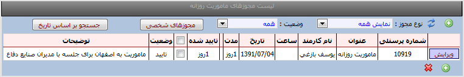

ماموریت روزانه
امکانات:
نمایش لیست درخواستهای ماموریت روزانه
ثبت ،ویرایش و حذف درخواستهای ماموریت روزانه
روش وارد نمودن درخواست :
ابتدا کلید ثبت را می زنید سپس عنوان مجوز و تاریخ شروع و پایان مجوز را وارد نموده و کلید ثبت درخواست را زده تا ثبت گردد.
نکته :در صورت عدم دسترسی به مجوز روزانه مورد نظر با کاربر admin برنامه تماس بگیرید .
روش حذف نمودن درخواست:
ابتدا گزینه لیست درخواستها را انتخاب سپس کلید ویرایش را زده و کلید حذف را می زنید تا درخواست از لیست حذف گردد.
نکته: دقت فرمایید که شما در صورتی می توانید درخواست را حذف نماید که در کارتابل مدیرمربوطه تایید نشده باشد.
کلید جستجو براساس تاریخ :با کلید جستجو براسا تاریخ می توانید درخواستها را براساس تاریخهاییی که وارد می نمایید مشاهده نمایید.
کلید وضعیت :بوسیله این کلید می توانید درخواستهای ارسال شده /رد شده /تایید شده و همه درخواستها را انتخاب نمایید.
